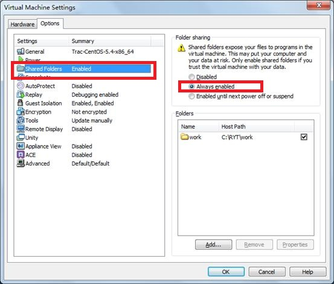
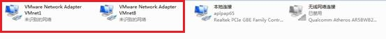
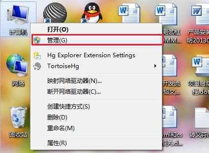
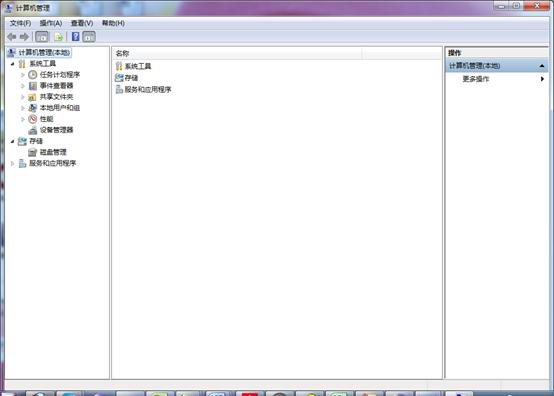
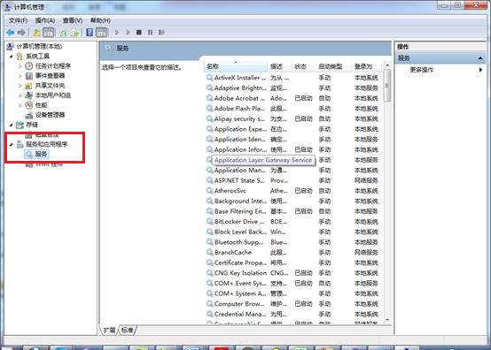
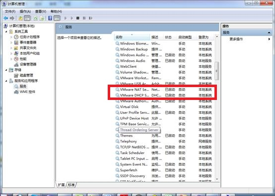

由于办公环境是Windows，而联调和生产环境都采用CentOS操作系统，所以我们需要用VMware软件来安装虚拟操作系统。
从ftp目录下载VMware-workstation-v9.0.1.exe默认安装即可。
由于项目需要在CentOS操作系统中编译，从ftp目录下载CentOS5.4_emp5.0.zip。下载后将文件解压到一个目录下，并运行VMware WorkStation，通过"文件->打开"选择解压后的虚拟机文件，并启动该虚拟机。
以Workstation为例：
在虚拟机中共享本地文件，共享后，我们可以在虚拟机中打开、编辑和编译宿主机上的文件。
启动VMware player，通过"虚拟机->设置->Options"打开虚拟机设置面板。如下图所示：
首先在左侧列表中选择"Shared Folders"选项，然后在右边的单选列中选择"Always enabled"选项进行设置，之后我们就可以通过"Add..."按钮来选择并确定我们的工作文件目录了。完成后，我们可以在虚拟机中打开"Computer->Filesystem->root"目录，查看是否存在我们刚刚共享的文件目录。

Q1：端口不通
表现为在windows下使用ping 192.168.241.3能正常返回数据包，若telnet 192.168.241.3 4002端口不通。有可能为防火墙没有关，需要将windows下的防火墙关闭，CentOS下的防火墙同样需要关闭。
A1：进入terminal，输入：
#/etc/init.d/iptables status ##查看防火墙状态
#/etc/init.d/iptable stop ##本次关闭防火墙
#/etc/init.d/iptable restart ##重启防火墙
永久性关闭防火墙：
#chkconfig --level 35 iptables off ( 注意中间的是两个英式小短线；重启)
A2：在防火墙中开放4002端口
在防火墙中开放4002端口命令为：
vi /etc/sysconfig/iptables
添加：-A RH-Firewall-1-INPUT -m state --state NEW -m tcp -p tcp --dport4002 -j ACCEPT
添加的这句话可以从vi出来的结果中拷一下修改一下端口即可。
然后保存并重启防火墙，这样我们需要的端口就添加进去了。
Q2：不能获得地址
一般如果按照4.5.2中的步骤是能正确设置虚拟机的网络地址的，如果出现实在无法获取的情况。
A:
首先请检查windows的网络设置：
必须得保证有VMnet1 和VMnet8两张网卡，如果无显示请联系系统工程师。

在有这两张网卡的情况下需要去检查VMNet服务是否开启：
点击计算机右键：选择管理


选择服务和应用程序中的服务：

点击一下名称按照字母重新排序：
保证上图红框中的那几项都为已启动，如果没有启动，请启动，并且从属性中设置为自动启动。

ftp地址： ftp://192.168.64.70，用户名密码均为public，此地址为融易通公司内部地址，如果为项目现场请找相关负责人 获取对应软件。